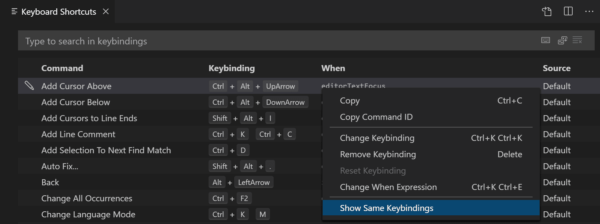
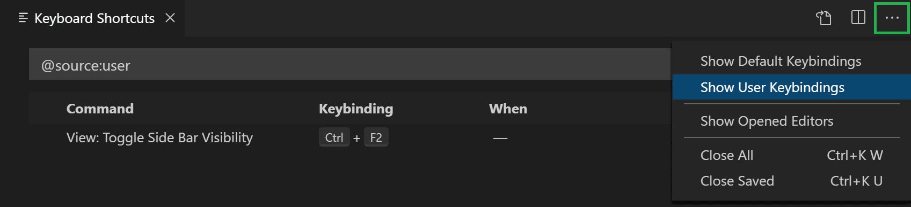
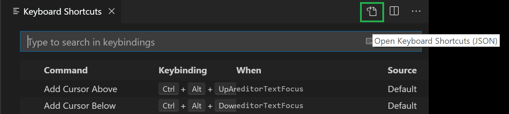
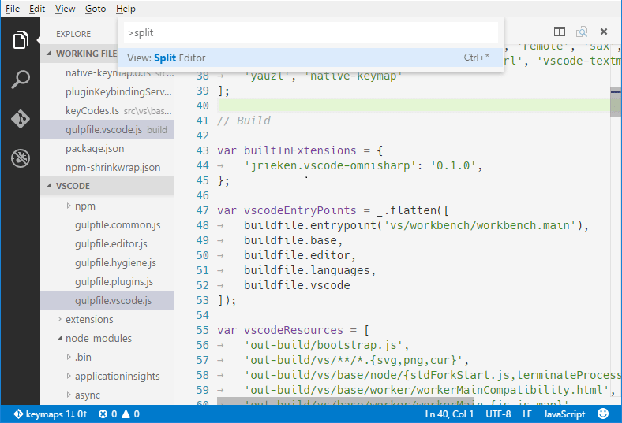
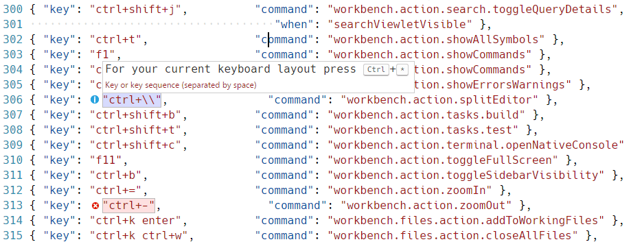
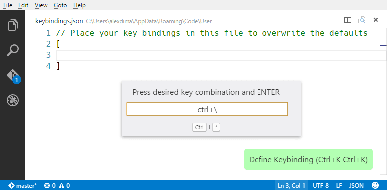
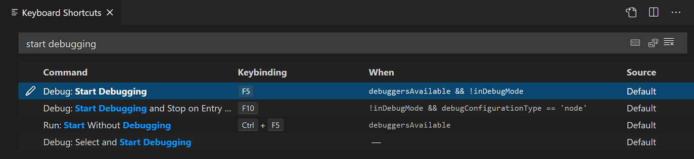
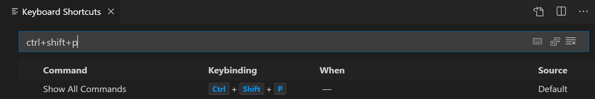

Visual Studio Code 键盘快捷键
Visual Studio Code 让你可以直接通过键盘完成大部分任务。本文介绍了如何修改 VS Code 中自带的默认键盘快捷键。
[!NOTE]
如果你在 Mac 上访问此页面，你将看到 Mac 的键盘快捷键。如果你使用 Windows 或 Linux 访问，则可以看到该平台对应的按键。如果你需要其他平台的键盘快捷键，请将鼠标悬停在你感兴趣的按键上。
键盘快捷键编辑器
VS Code 通过键盘快捷键编辑器提供了丰富的键盘快捷键编辑体验。编辑器列出了所有可用命令（带快捷键和不带快捷键的），并允许你使用可用的操作来更改、移除或重置它们的键盘快捷键。要查找命令或键盘快捷键，可使用搜索框并输入命令或快捷键来筛选列表。
要打开键盘快捷键编辑器，请选择 文件（File） > 首选项（Preferences） > 键盘快捷键（Keyboard Shortcuts） 菜单，或在命令面板中使用 首选项：打开键盘快捷键 命令（kb(workbench.action.openGlobalKeybindings)）。键盘快捷键编辑器默认以模态覆盖层的形式在编辑器区域顶部打开。

[!NOTE]
键盘快捷键会匹配你当前的键盘布局。例如，使用美式键盘布局时快捷键kbstyle(Cmd+\)，在切换到德语布局时将显示为kbstyle(Ctrl+Shift+Alt+Cmd+7)。更改键盘快捷键的对话框会根据你的键盘布局分配正确且合适的键盘快捷键。
自定义 UI 操作的快捷键
要自定义 UI 操作的键盘快捷键，请右键单击工作台中的任何操作项，然后选择 配置键绑定（Configure Keybinding）。这将打开键盘快捷键编辑器，并筛选出对应的命令。如果该操作有 when 子句，它会被自动包含，让你可以更方便地按需设置键盘快捷键。
键映射扩展
键映射扩展可以将 VS Code 的快捷键修改为与其他编辑器一致，这样你就不需要学习新的键盘快捷键了。
选择 文件（File） > 首选项（Preferences） > 从…迁移键盘快捷键（Migrate Keyboard Shortcuts from...） 菜单，可获取常用的键映射扩展列表。此外，Marketplace 中也有一个键映射（Keymaps）分类的扩展。
键盘快捷键参考
我们提供了可打印的默认键盘快捷键版本。选择 帮助（Help） > 键盘快捷方式参考（Keyboard Shortcut Reference） 可显示一份精简的 PDF 版本，适合打印出来作为快捷参考。
以下链接提供了三个平台对应版本（美式英文键盘）的访问：
如果你安装了许多扩展或者修改了键盘快捷键，可能会产生键盘快捷键冲突，即同一个键盘快捷键被映射到多个命令。这可能会导致令人困惑的行为，尤其是在编辑器中移动时不同的键盘快捷键会随着上下文范围的变化而生效或失效。
右键单击键盘快捷键列表中的项目，并选择 显示相同键绑定（Show Same Keybindings），可查看所有使用相同键盘快捷键的条目。

键盘快捷键故障排除
要排查键盘快捷键问题，你可以执行 开发人员：切换键盘快捷键故障排除（Developer: Toggle Keyboard Shortcuts Troubleshooting） 命令。这将激活已分派键盘快捷键的日志记录，并打开输出面板，显示相应的日志文件。
然后你可以按下所需的键盘快捷键，并查看 VS Code 检测到了哪个键盘快捷键以及调用了哪个命令。
例如，在 macOS 的代码编辑器中按下 cmd+/ 时，日志输出将如下所示：
[KeybindingService]: / Received keydown event - modifiers: [meta], code: MetaLeft, keyCode: 91, key: Meta
[KeybindingService]: | Converted keydown event - modifiers: [meta], code: MetaLeft, keyCode: 57 ('Meta')
[KeybindingService]: \ Keyboard event cannot be dispatched.
[KeybindingService]: / Received keydown event - modifiers: [meta], code: Slash, keyCode: 191, key: /
[KeybindingService]: | Converted keydown event - modifiers: [meta], code: Slash, keyCode: 85 ('/')
[KeybindingService]: | Resolving meta+[Slash]
[KeybindingService]: \ From 2 keybinding entries, matched editor.action.commentLine, when: editorTextFocus && !editorReadonly, source: built-in.在此日志示例中，第一个 keydown 事件是针对 MetaLeft 键（cmd）的，无法被分派。第二个 keydown 事件是针对 Slash 键（/）的，被分派为 meta+[Slash]。有两个键盘快捷键条目映射自 meta+[Slash]，匹配到的是命令 editor.action.commentLine，其 when 条件为 editorTextFocus && !editorReadonly，并且是一个内置键盘快捷键条目。
查看已修改的键盘快捷键
要筛选列表仅显示你已修改的快捷键，请在 更多操作（More Actions）（...）菜单中选择 显示用户键绑定（Show User Keybindings） 命令。这将对 键盘快捷键 编辑器应用 @source:user 筛选器（来源（Source） 为 'User'）。

高级自定义
VS Code 会在 keybindings.json 文件中记录你已自定义的键盘快捷键。对于高级自定义需求，你也可以直接修改 keybindings.json 文件。
要打开 keybindings.json 文件：
- 打开 键盘快捷键 编辑器，然后选择编辑器标题栏右侧的 打开键盘快捷键 (JSON) 按钮。

- 或者，在命令面板（
kb(workbench.action.showCommands)）中使用 打开默认键盘快捷键 (JSON) 命令。键盘规则
VS Code 中的键盘快捷键配置也被称为_键盘规则_。每条规则由以下属性组成：
key：描述按下的键，例如kb(actions.find)。command：要执行的 VS Code 命令的标识符，例如workbench.view.explorer用于打开资源管理器视图。when：（可选）子句，包含一个布尔表达式，其计算结果取决于当前的上下文。
和弦键（两次独立的按键操作）通过用空格分隔两次按键来描述。例如 kbstyle(Ctrl+K Ctrl+C)。
当按下某个键时，将应用以下求值规则：
- 规则从底部到顶部依次求值。
- 第一个同时匹配
key和when子句的规则将被接受。 - 如果找到了某条规则，则不再处理后续规则。
- 如果找到的规则设置了
command，则执行该command。
额外的 keybindings.json 规则会在运行时追加到默认规则的底部，从而允许它们覆盖默认规则。VS Code 会监听 keybindings.json 文件的变动，因此在 VS Code 运行期间编辑该文件将会在运行时更新规则。
键盘快捷键的分派是通过分析以 JSON 表达的一系列规则来完成的。以下是一些示例：
// Keyboard shortcuts that are active when the focus is in the editor
{ "key": "home", "command": "cursorHome", "when": "editorTextFocus" },
{ "key": "shift+home", "command": "cursorHomeSelect", "when": "editorTextFocus" },
// Keyboard shortcuts that are complementary
{ "key": "f5", "command": "workbench.action.debug.continue", "when": "inDebugMode" },
{ "key": "f5", "command": "workbench.action.debug.start", "when": "!inDebugMode" },
// Global keyboard shortcuts
{ "key": "ctrl+f", "command": "actions.find" },
{ "key": "alt+left", "command": "workbench.action.navigateBack" },
{ "key": "alt+right", "command": "workbench.action.navigateForward" },
// Global keyboard shortcuts using chords (two separate keypress actions)
{ "key": "ctrl+k enter", "command": "workbench.action.keepEditor" },
{ "key": "ctrl+k ctrl+w", "command": "workbench.action.closeAllEditors" },可接受的按键
key 由修饰键和按键本身组成。
以下修饰键是可接受的：
| 平台 | 修饰键 | ||
|---|---|---|---|
| -- | --------- | ||
| macOS | kbstyle(Ctrl+)、kbstyle(Shift+)、kbstyle(Alt+)、kbstyle(Cmd+) | ||
| Windows | kbstyle(Ctrl+)、kbstyle(Shift+)、kbstyle(Alt+)、kbstyle(Win+) | ||
| Linux | kbstyle(Ctrl+)、kbstyle(Shift+)、kbstyle(Alt+)、kbstyle(Meta+) |
以下按键是可接受的：
kbstyle(f1-f19)、kbstyle(a-z)、kbstyle(0-9)- `
kbstyle()`、kbstyle(-)、kbstyle(=)、kbstyle([)、kbstyle(])、kbstyle(\)、kbstyle(;)、kbstyle(')、kbstyle(,)、kbstyle(.)、kbstyle(/)` kbstyle(left)、kbstyle(up)、kbstyle(right)、kbstyle(down)、kbstyle(pageup)、kbstyle(pagedown)、kbstyle(end)、kbstyle(home)kbstyle(tab)、kbstyle(enter)、kbstyle(escape)、kbstyle(space)、kbstyle(backspace)、kbstyle(delete)kbstyle(pausebreak)、kbstyle(capslock)、kbstyle(insert)kbstyle(numpad0-numpad9)、kbstyle(numpad_multiply)、kbstyle(numpad_add)、kbstyle(numpad_separator)kbstyle(numpad_subtract)、kbstyle(numpad_decimal)、kbstyle(numpad_divide)命令参数
你可以带参数调用命令。如果你经常对特定文件或文件夹执行相同的操作，这将非常有用。你可以添加自定义键盘快捷键来精确完成你想要的操作。
以下是一个覆盖 kbstyle(Enter) 键以打印某段文本的示例：
{ "key": "enter", "command": "type",
"args": { "text": "Hello World" },
"when": "editorTextFocus" }type 命令将接收 {"text": "Hello World"} 作为其第一个参数，并将 "Hello World" 添加到文件中，而不是执行默认命令。
有关支持参数的命令的更多信息，请参阅内置命令。
运行多个命令
一个键盘快捷键可以配置为通过使用 runCommands 命令按顺序运行多个命令。
- 运行多个不带参数的命令：
以下示例将当前行向下复制、将当前行标记为注释，然后将光标移动到复制的那一行。
{
"key": "ctrl+alt+c",
"command": "runCommands",
"args": {
"commands": [
"editor.action.copyLinesDownAction",
"cursorUp",
"editor.action.addCommentLine",
"cursorDown"
]
}
},- 向命令传递参数：
此示例创建一个新的无标题 TypeScript 文件并插入一个自定义代码片段。
{
"key": "ctrl+n",
"command": "runCommands",
"args": {
"commands": [
{
"command": "workbench.action.files.newUntitledFile",
"args": {
"languageId": "typescript"
}
},
{
"command": "editor.action.insertSnippet",
"args": {
"langId": "typescript",
"snippet": "class ${1:ClassName} {\n\tconstructor() {\n\t\t$0\n\t}\n}"
}
}
]
}
},请注意，由 runCommands 运行的命令会将 "args" 的值作为第一个参数接收。在上例中，workbench.action.files.newUntitledFile 接收 {"languageId": "typescript" } 作为其第一个也是唯一的参数。
要传递多个参数，你需要将 "args" 设为数组：
{
"key": "ctrl+shift+e",
"command": "runCommands",
"args": {
"commands": [
{
// command invoked with 2 arguments: vscode.executeCommand("myCommand", "arg1", "arg2")
"command": "myCommand",
"args": [
"arg1",
"arg2"
]
}
]
}
}要将数组作为第一个参数传递，请将该数组包装在另一个数组中："args": [ [1, 2, 3] ]。
移除键盘快捷键
要移除键盘快捷键，请右键单击键盘快捷键编辑器中的条目，并选择 删除键绑定（Remove Keybinding）。
要通过 keybindings.json 文件移除键盘快捷键，在 command 前添加 -，该规则将成为一条移除规则。
以下是一个示例：
// In Default Keyboard Shortcuts
...
{ "key": "tab", "command": "tab", "when": ... },
{ "key": "tab", "command": "jumpToNextSnippetPlaceholder", "when": ... },
{ "key": "tab", "command": "acceptSelectedSuggestion", "when": ... },
...
// To remove the second rule, for example, add in keybindings.json:
{ "key": "tab", "command": "-jumpToNextSnippetPlaceholder" }
要用空操作覆盖特定的键盘快捷键规则，你可以指定一个空命令：
// To override and disable any `tab` keyboard shortcut, for example, add in keybindings.json:
{ "key": "tab", "command": "" }键盘布局
[!NOTE]
本节仅与键盘快捷键相关，与编辑器中的输入无关。
按键是虚拟键的字符串表示，不一定与按下时产生的字符相关。更准确地说：
- 参考：虚拟键码（Windows）
kbstyle(tab)对应VK_TAB（0x09）kbstyle(;)对应VK_OEM_1（0xBA）kbstyle(=)对应VK_OEM_PLUS（0xBB）kbstyle(,)对应VK_OEM_COMMA（0xBC）kbstyle(-)对应VK_OEM_MINUS（0xBD）kbstyle(.)对应VK_OEM_PERIOD（0xBE）kbstyle(/)对应VK_OEM_2（0xBF）- `
kbstyle()`对应VK_OEM_3（0xC0`） kbstyle([)对应VK_OEM_4（0xDB）kbstyle(\)对应VK_OEM_5（0xDC）kbstyle(])对应VK_OEM_6（0xDD）kbstyle(')对应VK_OEM_7（0xDE）- 等等。
不同的键盘布局通常会重新排列这些虚拟键或改变按下时产生的字符。当使用与标准美式键盘不同的键盘布局时，Visual Studio Code 会执行以下操作：
所有键盘快捷键在 UI 中都会使用当前系统的键盘布局进行呈现。例如，使用法语（法国）键盘布局时，拆分编辑器（Split Editor） 现在呈现为 kbstyle(Ctrl+*)：

在编辑 keybindings.json 时，VS Code 会高亮显示可能产生误导的键盘快捷键——这些快捷键在文件中以标准美式键盘布局下产生的字符表示，但在当前系统键盘布局下需要按下带有不同标签的键。例如，以下是使用法语（法国）键盘布局时默认键盘快捷键规则的显示效果：

还有一个用于在编辑 keybindings.json 时帮助输入键盘快捷键规则的 UI 控件。要启动 定义键绑定（Define Keybinding） 控件，请按 kb(editor.action.defineKeybinding)。该控件会监听按键操作，并在文本框中呈现序列化的 JSON 表示形式，并在其下方显示 VS Code 在当前键盘布局下检测到的按键。输入你想要的按键组合后，你可以按 kbstyle(Enter) 键，一条规则片段就会被插入。

[!NOTE]
在 Linux 上，VS Code 会在启动时检测你当前的键盘布局，然后缓存此信息。我们建议你在更改键盘布局后重启 VS Code。
键盘布局无关的绑定
使用扫描码，可以定义不随键盘布局变化而改变的键盘快捷键。例如：
{ "key": "cmd+[Slash]", "command": "editor.action.commentLine",
"when": "editorTextFocus" }可接受的扫描码：
kbstyle([F1]-[F19])、kbstyle([KeyA]-[KeyZ])、kbstyle([Digit0]-[Digit9])kbstyle([Backquote])、kbstyle([Minus])、kbstyle([Equal])、kbstyle([BracketLeft])、kbstyle([BracketRight])、kbstyle([Backslash])、kbstyle([Semicolon])、kbstyle([Quote])、kbstyle([Comma])、kbstyle([Period])、kbstyle([Slash])kbstyle([ArrowLeft])、kbstyle([ArrowUp])、kbstyle([ArrowRight])、kbstyle([ArrowDown])、kbstyle([PageUp])、kbstyle([PageDown])、kbstyle([End])、kbstyle([Home])kbstyle([Tab])、kbstyle([Enter])、kbstyle([Escape])、kbstyle([Space])、kbstyle([Backspace])、kbstyle([Delete])kbstyle([Pause])、kbstyle([CapsLock])、kbstyle([Insert])kbstyle([Numpad0]-[Numpad9])、kbstyle([NumpadMultiply])、kbstyle([NumpadAdd])、kbstyle([NumpadComma])kbstyle([NumpadSubtract])、kbstyle([NumpadDecimal])、kbstyle([NumpadDivide])when 子句上下文
VS Code 通过可选的 when 子句让你能够精确控制键盘快捷键的启用时机。如果你的键盘快捷键没有 when 子句，则该键盘快捷键在任何时候都是全局可用的。when 子句求值为 true 或 false 以决定是否启用键盘快捷键。
VS Code 会根据 VS Code UI 中哪些元素可见和活动来设置各种上下文键和特定值。例如，内置的 开始调试（Start Debugging） 命令的键盘快捷键为 kb(workbench.action.debug.start)，该快捷键仅在有合适的调试器可用时（上下文 debuggersAvailable 为 true）并且编辑器不处于调试模式时（上下文 inDebugMode 为 false）才启用：

你也可以在默认的 keybinding.json（首选项：打开默认键盘快捷键 (JSON)）中直接查看键盘快捷键的 when 子句：
{ "key": "f5", "command": "workbench.action.debug.start",
"when": "debuggersAvailable && !inDebugMode" },条件运算符
对于 when 子句中的条件表达式，以下条件运算符在键盘快捷键中非常有用：
| 运算符 | 符号 | 示例 | ||||||
|---|---|---|---|---|---|---|---|---|
| -------- | ------ | ------- | ||||||
| 等于 | == | "editorLangId == typescript" | ||||||
| 不等于 | != | "resourceExtname != .js" | ||||||
| 或 | \ | \ | "isLinux\ | \ | isWindows" | |||
| 与 | && | "textInputFocus && !editorReadonly" | ||||||
| 匹配 | =~ | `"resourceScheme =~ /^untitled$\ | ^file$/"` |
你可以在 when 子句上下文 参考中找到完整的 when 子句条件运算符列表。
可用上下文
你可以在 when 子句上下文参考 中找到一些可用的 when 子句上下文。
此列表并非详尽无遗，你可以通过在键盘快捷键编辑器（首选项：打开键盘快捷键）中搜索和筛选，或查看默认的 keybindings.json 文件（首选项：打开默认键盘快捷键 (JSON)），来找到其他 when 子句上下文。
用于重构的自定义键盘快捷键
editor.action.codeAction 命令允许你为特定的重构（代码操作）配置键盘快捷键。例如，以下键盘快捷键会触发 提取函数（Extract function） 重构代码操作：
{
"key": "ctrl+shift+r ctrl+e",
"command": "editor.action.codeAction",
"args": {
"kind": "refactor.extract.function"
}
}这在重构一文中进行了深入介绍，你可以在其中了解不同类型的代码操作，以及在存在多个可选重构时如何对其进行优先级排序。
相关资源
- VS Code 默认键盘快捷键参考
常见问题
我如何知道某个特定键绑定到哪个命令？
在键盘快捷键编辑器中，你可以按特定的按键组合进行筛选，以查看哪些命令绑定到哪些键。在以下截图中，你可以看到 kbstyle(Ctrl+Shift+P) 绑定到 显示所有命令（Show All Commands） 以打开命令面板。

如何为某个操作添加键盘快捷键，例如添加 Ctrl+D 用于删除行
在 默认键盘快捷键 中找到触发该操作的规则，并在你的 keybindings.json 文件中编写其修改版本：
// Original, in Default Keyboard Shortcuts
{ "key": "ctrl+shift+k", "command": "editor.action.deleteLines",
"when": "editorTextFocus" },
// Modified, in User/keybindings.json, Ctrl+D now will also trigger this action
{ "key": "ctrl+d", "command": "editor.action.deleteLines",
"when": "editorTextFocus" },如何仅为特定文件类型添加键盘快捷键？
在你的 when 子句中使用 editorLangId 上下文键：
{ "key": "shift+alt+a", "command": "editor.action.blockComment",
"when": "editorTextFocus && editorLangId == csharp" },我在 keybindings.json 中修改了键盘快捷键，为什么它们不生效？
最常见的原因是文件中存在语法错误。否则，尝试移除 when 子句或选择一个不同的 key。不幸的是，目前这只能通过反复尝试来解决。